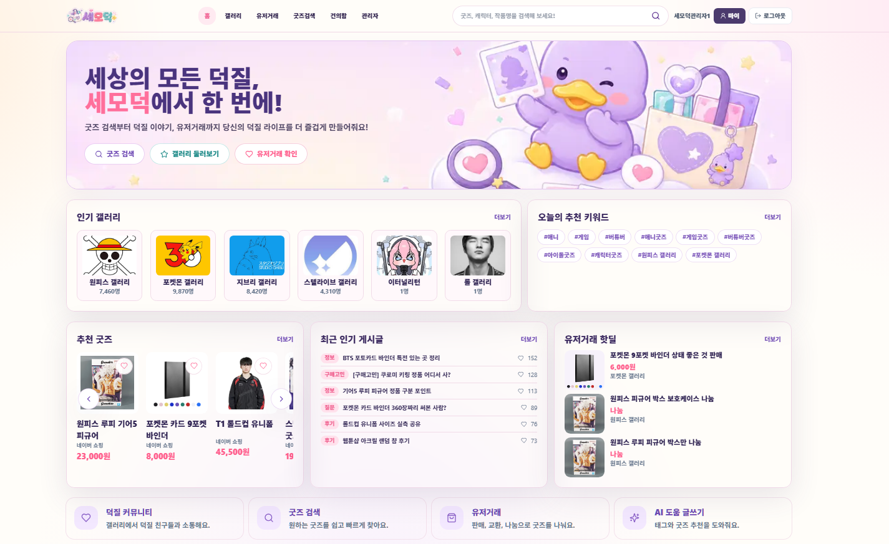
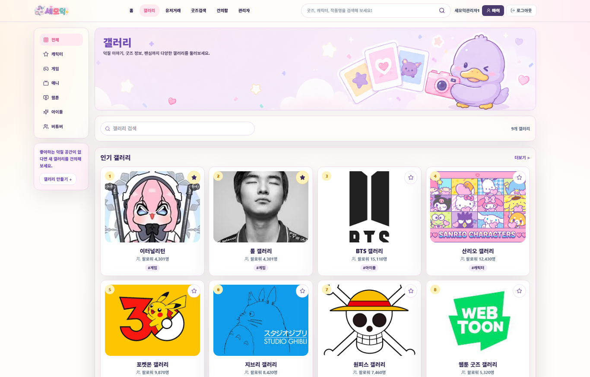
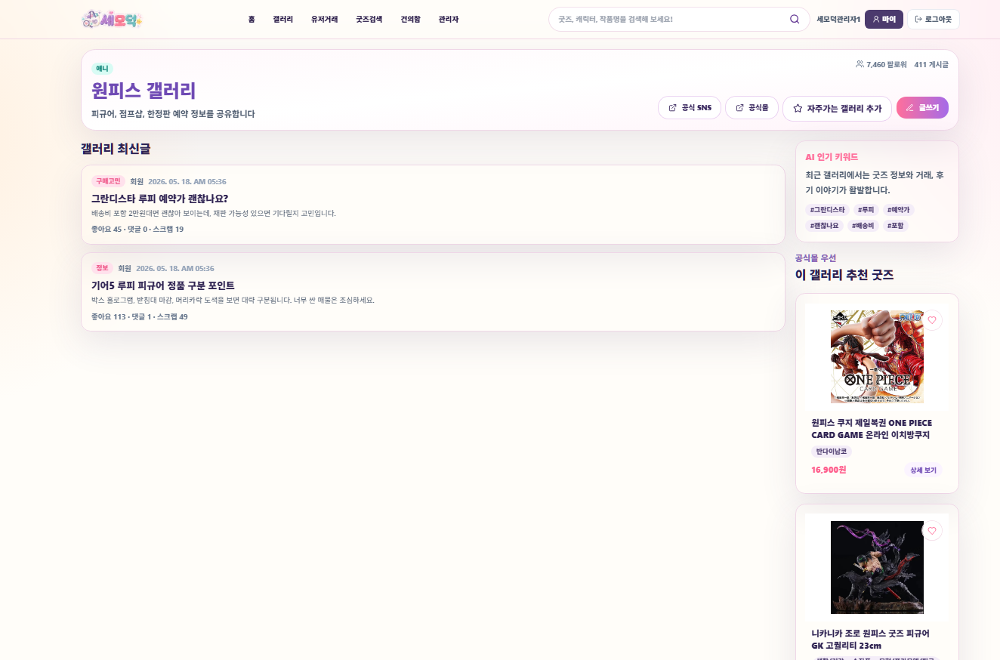
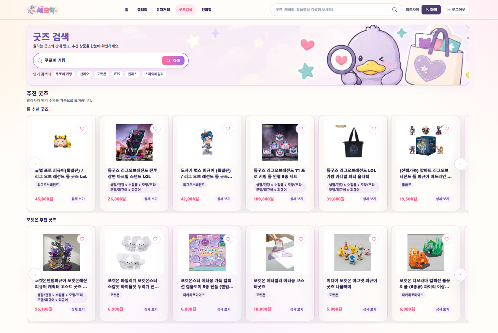
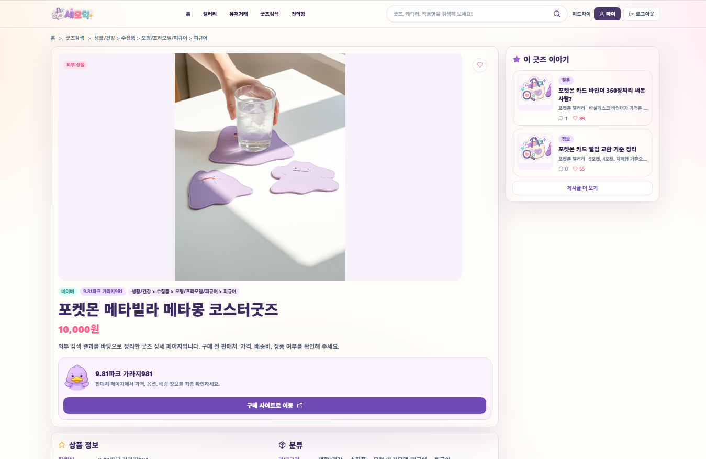
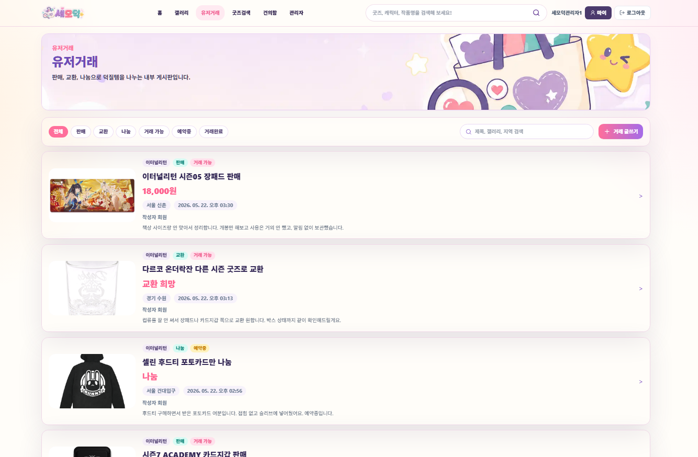
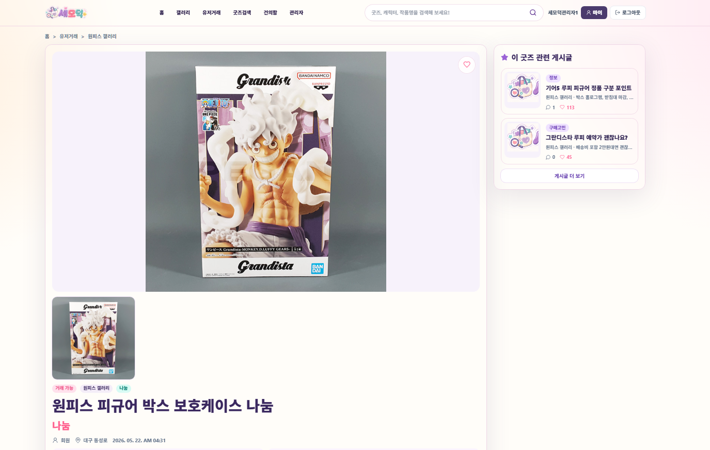
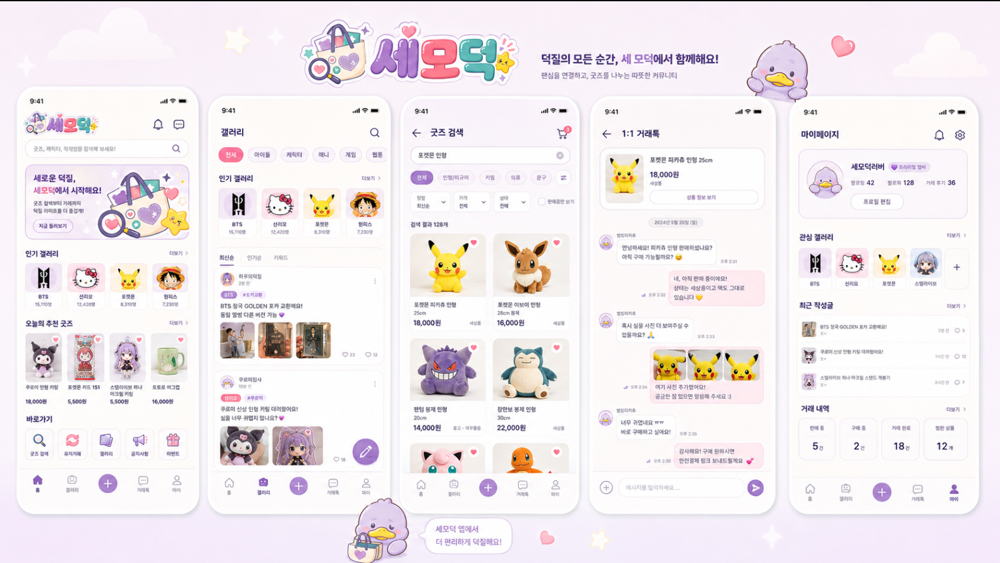

Overview
프로젝트 소개
관심사별 갤러리, 게시글, 굿즈 검색, 내부 거래 게시판을 하나의 사용자 흐름으로 묶은 프로젝트입니다.
Project
팬덤별 커뮤니티 활동과 굿즈 탐색, 유저 거래 기능을 제공하는 웹 플랫폼

Overview
관심사별 갤러리, 게시글, 굿즈 검색, 내부 거래 게시판을 하나의 사용자 흐름으로 묶은 프로젝트입니다.
Problem
팬덤 활동은 이야기, 상품 정보, 거래가 따로 흩어져 있어 사용자가 여러 화면을 오가야 합니다. 세모덕은 이 흐름을 한 서비스 안에서 이어지도록 설계했습니다.
Flow
사용자 인증 → 갤러리 탐색 → 게시글과 댓글 → 굿즈 검색 → 찜 또는 유저 거래 게시글 확인
Troubleshooting
외부 굿즈 상세 정보를 쿼리 파라미터로 모두 넘기면서 URL이 길어지고 새로고침·공유 시 데이터 안정성이 떨어졌습니다.
외부 API 상품 데이터를 내부 DB에 저장하지 않고 화면 상태로만 전달했기 때문에 상세 페이지가 URL과 클라이언트 상태에 과하게 의존했습니다.
외부 상품 ID를 기준으로 external_goods 테이블에 upsert하고 /goods/external/[id] 경로에서 다시 조회하도록 바꾸어 상세 페이지를 안정적인 리소스로 분리했습니다.
외부 API 데이터도 서비스 안에서 반복 조회되고 공유되는 순간 내부 식별자와 캐시 전략이 필요하다는 점을 확인했습니다.
작성자, 관리자, 일반 사용자의 수정·삭제·신고 권한이 화면별로 다르게 동작했습니다.
UI 조건과 Supabase RLS 정책이 같은 기준으로 정리되지 않아 클라이언트에서는 보이지만 서버에서 거절되는 흐름이 생겼습니다.
사용자 ID, 작성자 ID, 관리자 여부를 기능별 체크 기준으로 정리하고 UI 표시 조건과 RLS 정책을 같은 권한 모델에 맞췄습니다.
권한은 버튼을 숨기는 문제가 아니라 데이터 요청 단계까지 일관되게 막아야 하는 서비스 설계 문제였습니다.
Screens








Learning
커뮤니티, 상품, 거래처럼 성격이 다른 기능도 사용자 목표를 기준으로 묶으면 더 자연스러운 서비스 흐름을 만들 수 있었습니다.